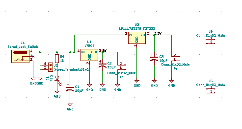
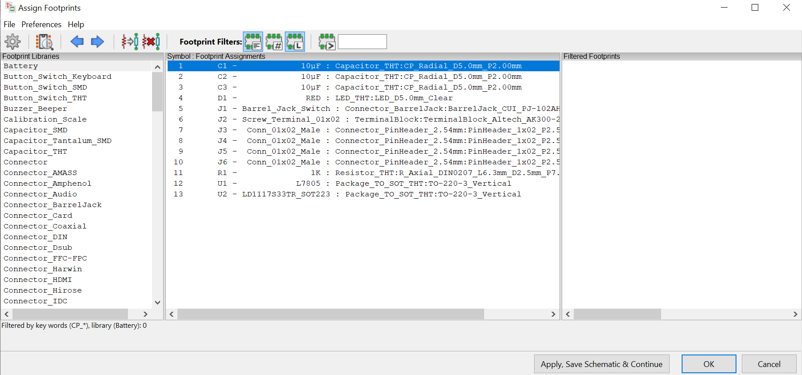
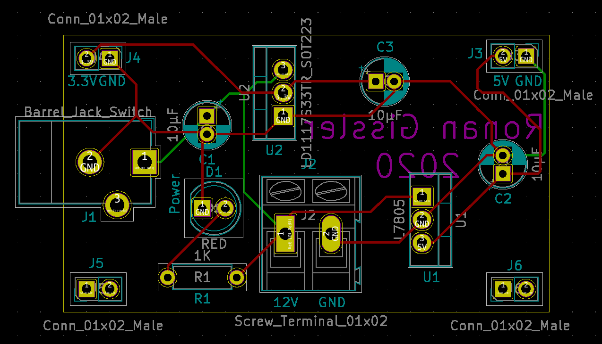
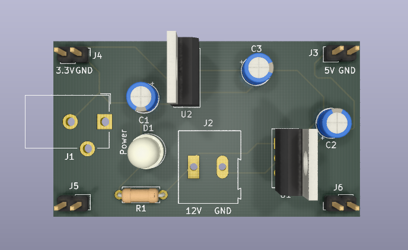
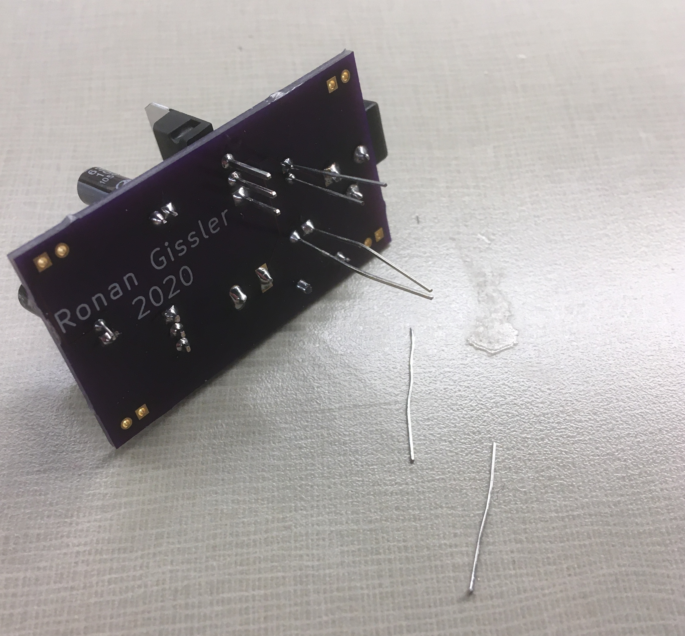

Introduction
This project was completed as part of my electronics class during the fall semester of my junior year at Tufts and was the first printed circuit assembly (PCA) I designed. For reference, a printed circuit board (PCB) is just the board without components mounted, while the PCA is the PCB with components mounted. The PCA is about 1" x 2" and provides 3.3V, 5V, and 12V connections as well as ground connections for each. Additionally, a red LED lights up when the board is connected to power. The electronic components are mounted using the through-hole method and include the following:
- 1 Barrel Jack Connector
- 1 3.3V Voltage Regulator
- 1 5V Voltage Regulator
- 3 10 uF Capacitors
- 1 Screw Terminal (1x2)
- 4 Pin Headers (1x2)
- 1 1K Ohm Resistor
- 1 Red LED

Final Voltage Regulator PCB (left) and PCA (right)
Design Process
The circuit was first assembled on a breadboard and tested to ensure everything worked as expected before a PCB was printed. Then, the breadboard prototype was translated to the design of a PCB using KiCAD, a free schematic and PCB design software. The design of the PCB on KiCAD can be broken down into three steps: drawing a schematic to illustrate the functions of the circuit, assigning footprints to components in the schematic to describe their physical structure (pin hole arrangement), and then designing the structure of the PCB itself (dimensioning the board, locating components, and drawing traces).
KiCAD Schematic of Voltage Regulator Circuit
Footprints Applied to Voltage Regulator Circuit Components
PCB Layout of Voltage Regulator
3D View of PCB Layout of Voltage Regulator
Construction
After completing the PCB design, I sent the design along with some money to OSH Park, a PCB fabricator. In return, they sent me back three copies of the PCB a few weeks later. To transistion the nice-looking PCBs into working PCAs, the last step was to solder on the electronic components. These components were the same as those used in the initial breadboard prototype and were purchased by the course instructors off of Digi-Key. Being careful to avoid soldering together traces on the board, I soldered on each of the components to the PCB. I trimmed off the excess pin length on the components and the PCA was ready to go!
Trimming Off Excess Wire During Soldering Process